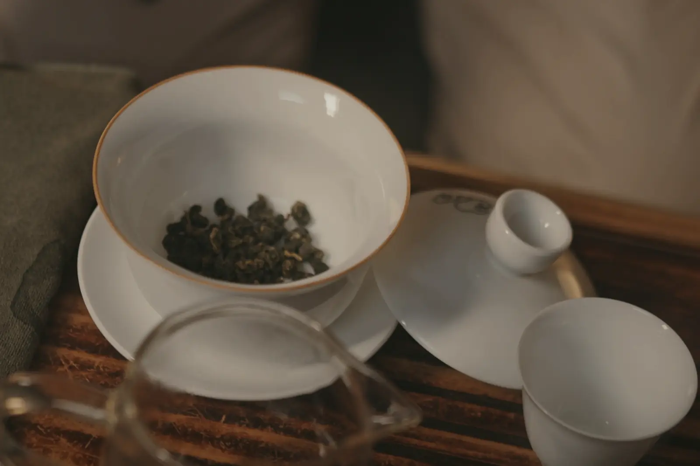
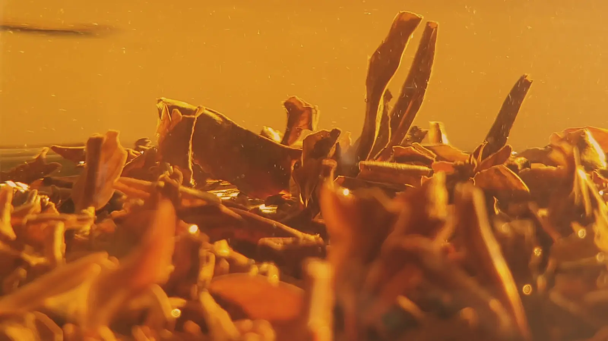

One tin, 100 g.
Charcoal-roasted Qingxin oolong from the spring 2026 pick, rolled into knots and sealed under a slip lid. It is the only thing we sell.
S$42
Order the tin20 doses of 5 g × 4 steeps = 80 pots of tea

Everything on the label.
- Tea
- Charcoal-roasted, cloth-rolled oolong
- Cultivar
- Qingxin oolong
- Garden
- A family ridge garden above Shizhuo, Alishan range, Chiayi County, Taiwan
- Altitude
- 1,300 m
- Picked
- 21 April 2026, by hand
- Rolled
- 36 times, in cloth
- Roasted
- 28 August and 4 September 2026, longan charcoal
- Net
- 100 g, in a slip-lid tin
- Lot
- 600 tins

Tip the leaf out and look.
What comes out of the pot should be whole leaves, many still joined at the stem in twos and threes, soft, with a little red at the edges where the tossing bruised them. If you find dust and fragments, it wasn't ours.
Delivered across Singapore.
Courier to any address on the island is S$6, and free from 2 tins. Or collect from the tasting room in Joo Chiat by appointment, and we will pour you a pot while you're there.
Up to 6 tins an order, so the lot lasts the year.
Before you ask.
How long does a tin keep?
Sealed, a year from the roast without losing much. Once opened, keep the lid on, out of the sun and away from the stove, and drink it within three months; roasted oolong holds up better than green, but air still takes the top notes first.
How much caffeine is in it?
Less than a coffee, more than a green tea steeped briefly. It varies with how long you steep; the first pot carries the most.
Why a tin and not a bag?
Rolled leaf keeps its shape only if nothing crushes it, and oolong picks up smells from whatever it sits beside. A rigid tin with a slip lid keeps out light, air and the kitchen, and doesn't let the knots break on the way to you.
Do you sell anything else?
No. One garden, one roast, one tin. When the lot is gone, the next spring's comes in.